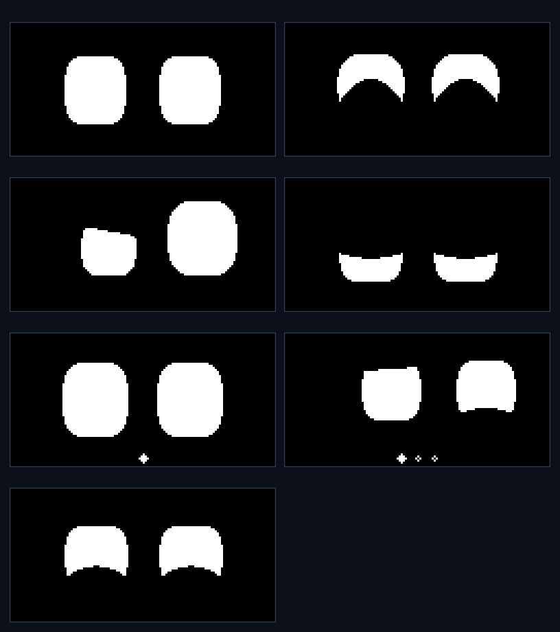

Guida all'avvio e all'uso dell'applicazione vocale locale su Windows 11:
Ollama (qwen2.5:3b), faster-whisper, voce Piper Riccardo Amichetto Vivace
e simulatore degli occhi OLED.
Nella configurazione predefinita nessuna voce o conversazione esce dal PC:
Ollama risponde su 127.0.0.1:11434, Whisper trascrive su CPU e Piper sintetizza la voce in locale.
05-Voice-AI/)| File / Cartella | Funzione |
|---|---|
run_jarvis.bat | Script di avvio rapido con ambiente isolato .venv |
jarvis_app.py | Interfaccia grafica Tkinter + simulatore occhi OLED integrato |
voice_controller.py | Gestisce ciclo IDLE → LISTENING → THINKING → SPEAKING → IDLE |
ai_providers.py | Provider Ollama (127.0.0.1:11434), Demo e OpenAI (opzionale) |
stt_providers.py | Riconoscimento vocale italiano locale con faster-whisper |
tts_providers.py & voice_dsp.py | Sintesi Piper Riccardo + DSP Amichetto Vivace e fallback Microsoft Elsa |
eye_bridge.py | Ponte comandi verso simulatore o futura seriale USB ESP32-S3 |
127.0.0.1:11434).05-Voice-AI\run_jarvis.bat.ollama, demo, openai), Microfono, Voce TTS con pulsante Anteprima, slider Velocità e Volume.qwen2.5:3b su http://127.0.0.1:11434 (non esposto su LAN).base su CPU (int8), lingua forzata su italiano (it)..env locale e spuntando la conferma esplicita in GUI.
La voce predefinita è JARVIS Amichetto (Piper Riccardo), configurata in
config.py con i parametri scelti in laboratorio (profilo Amichetto Vivace):
pitch = +5.0 semitoni, velocità = 1.21, noise_scale = 1.10,
robot_mix = 0.00.
Premendo Anteprima accanto al selettore voce puoi ascoltare subito il saluto di JARVIS.
Se l'eseguibile o il modello Piper non fosse disponibile, il sistema passa automaticamente a
Microsoft Elsa Desktop (selezionabile anche manualmente dal menu a tendina).

eye_engine.py per le 7 espressioni.IDLE → NEUTRAL, LISTENING → LISTENING, THINKING → THINKING, SPEAKING → SPEAKING, errori → CURIOUS.eye_bridge.py (SerialEyeTransport) e il canale binario USB-CDC (06-Hardware-Integration/USB_PROTOCOL.md) invieranno direttamente audio e stati al robot fisico.| Sintomo | Causa probabile | Soluzione |
|---|---|---|
| Errore microfono Windows (322) | Un'altra app blocca il dispositivo audio o microfono errato | Chiudi altre app audio e seleziona il microfono giusto dal menu in GUI |
| Ollama non rilevato | Servizio ollama serve fermo | Avvia Ollama in locale su 127.0.0.1:11434 o passa temporaneamente a Demo Mode |
| Voce diversa da Piper | Selezionata Microsoft Elsa o modello Piper mancante | Seleziona JARVIS Amichetto (Piper Riccardo) e premi Anteprima |